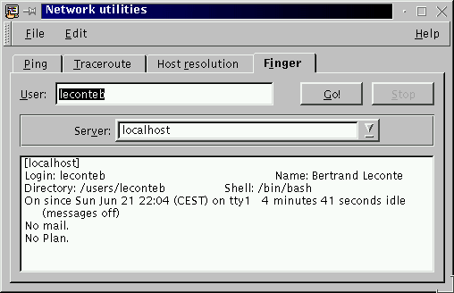

Next Previous Table of Contents
The Finger tab allows the execution of the
finger(1) command. The finger
command displays information about the system users.
The command output will depends on the server which will make the reply.

This is the name (or the address) of the finger server to ask.
Next Previous Table of Contents